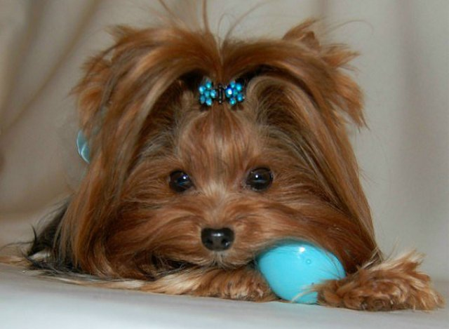

Термин «груминг» обозначает общий уход за видом собаки, но чаще всего этим словом именуется профессиональная стрижка питомца. Люди, у которых никогда не было породистой собаки, наверняка только пожмут плечами: зачем собаке стрижка? Тем не менее, груминг – необходимое мероприятия, основная цель которого – поддержание здоровья питомца. То есть это такая же гигиеническая процедура, как чистка зубов для человека. Представьте, что будет, если вы полгода не будете расчесывать волосы? Собака, которую давно не стригли, испытывает приблизительно такие же ощущения.
Лучше всего доверить груминг профессионалу, хотя некоторые владельцы собак стригут своих четвероногих друзей самостоятельно. Многое в процедуре ухода за шерстью зависит от конкретной породы. Но основных видов груминга всего три:
- Гигиенический.
- Домашний.
- Выставочный.
Чаще всего делается гигиенический вид груминга. Для большинства пород его принято проводить приблизительно раз в месяц, можно чуть чаще. Задача этой процедуры – поддерживать собаку в форме. Гигиеническая стрижка проводится до купания, и для собаки это стресс. Процедура включает такие действия:
- Стрижка когтей.
- Выстригание шерсти между пальцами и подушечками.
- Стрижка шерсти на лапах.
- Удаление лишней шерсти из ушей.
- Стрижка гениталий.
Кроме того, гигиеническая стрижка пса охватывает тримминг и стриппинг. Тримминг проводится дважды в год, это щип отмершей шерсти. Стриппинг направлен на обновление шерсти, он представляет собой искусственно вызываемую линьку.
А вот домашний груминг придуман для того, чтобы владельцам было проще ухаживать за своим четвероногим товарищем. Такая процедура означает, что шерсть собаки будет сострижена значительно короче положенного, что упростит хозяевам жизнь. Форма стрижки варьируется в зависимости от породы. Например, терьерам часто состригают нижнюю шерсть с лап и живота, несмотря на то, что это стандарт породы: нижняя шерсть – отличная «щетка», которая собирает на себя много грязи во время прогулки. Пуделей тоже принято выстригать короче, но им удаляют шерсть с лап и «холки».
Реже всего владельцы псов прибегают к выставочному виду груминга. Дело в том, что к участию в выставках допускаются только собаки, которые подстрижены одним определенным образом. Для каждой породы этот стандарт, естественно, свой. Есть около четырех сотен официально известных пород собак, то есть одновременно и около четырех сотен видов стрижек.
Впрочем, выставочный груминг позволяет замаскировать некоторые недостатки внешнего вида пса, подчеркнув в то же время его достоинства: это зависит от мастерства и профессионализма грумера, который берется за стрижку.